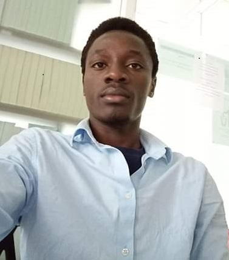

|  |
About MeI was born on the 9th of September 1997 in Kiabusura village in Kisii county, Kenya. As a first born in a family of 4, all the siblings had to look upto me and so my goals had to be properly aligned with the family virtues and principles. So now at 23 years, I am still studying to pursue my dreams that have increasing grown lit since I was about 10 years of age. A dream to be a software developer, and solve some of the problems that technolgy can help solve. Yet my siblings look up to me for and the least I would do is to disappoint their hopes. I am inspired by my mother who has never stopped loving us and encouraging us that our dreams are valid regardless of the hardship of the situation around. She adores love and encourages us (me and my siblings) to love each other and extend the same to others.Overly, humanity is my principle and I care about how to design a human centered approach that solves challenges the world faces. To add on, I am a Christian. |
Education Qualification
|
|
Projects
|
Skills
|
Hobbies |
Past-times |
Contact Informations.maisiba@alustudent.com+254 743060434 |
|